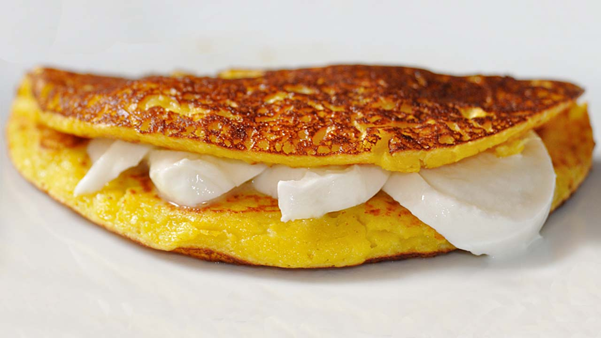

Receta de cachapas

Cantidad de comensales:
Dificultad de la receta:
Fácil
Tiempo necesario:
45 minutos más 1 hora de reposo
Lista de ingredientes:
- 450 gr de maíz fresco.
- 130 ml de leche.
- 2 huevos M.
- 2 cucharadas soperas de harina de maíz precocida, ya sea amarilla o blanca.
- 2 cucharadas soperas de harina de trigo.
- 1 cucharada sopera de azúcar blanco.
- 1 cucharada sopera de mantequilla.
- Queso de mano o queso guayanés.
- 1 cucharadita de postre de sal.
Pasos a seguir:
- Si el maíz es congelado, lee las instrucciones del paquete para descongelarlo, aunque normalmente te
indican que lo cuezas unos pocos minutos o incluso que simplemente lo pongas en un escurridor, le eches agua
por encima y se descongelarán enseguida.
- Tanto si el maíz es congelado como si es de lata o fresco, escúrrelo bien y ponlo en el vaso
de la batidora o robot que vayas a utilizar.
- Añade al vaso la leche, la harina de maíz, el azúcar y la sal, y tritura durante unos segundos
para que la mezcla se vea bastante homogénea pero también es importante que conserve grumos.
- Incorpora la mantequilla y los huevos y tritura de nuevo para que se integren todos los ingredientes.
- Ahora observa la textura ya que hay que hacer rectificaciones porque no todos los tipos de maíz
tienen la misma cantidad de líquido. Debe estar bastante grumosa y espesa, y si no es así,
añade la harina de trigo y tritura unos segundos de nuevo, e incluso añade un poco más de harina si
es necesario, hasta que consigas que la mezcla esté densa, que le cueste un poco moverse.
- Pon la mezcla en un recipiente tapado y déjala reposar en la nevera al menos 30 minutos
(también puedes dejarla hecha de un día para otro).
- Saca el recipiente de la nevera y empieza a cocinar las cachapas. Para ello, utilizar una sartén
antiadherente y ponle un poquito de mantequilla, a fuego medio.
- Cuando se haya derretido mueve la sartén para que la mantequilla se reparta por toda su superficie y,
con un cucharón, echa una porción de masa. La idea es que las cachapas midan unos 12-14 cm de
diámetro, aunque puedes prepararlas a tu gusto más grandes o más pequeñas, y que no
queden excesivamente finas, por ejemplo medio centímetro de grosor estaría bien.
- Con el propio cucharón, una vez echada la masa, extiéndela un poco para darle la forma
definitiva a la cachapa. Si utilizas una sartén grande puedes cocinar varias cachapas a la vez.
- Espera a que se vean en la superficie algunas burbujas y huecos, como sucede cuando se preparan tortitas
(tardará 2-3 minutos aproximadamente), y la masa pase de estar brillante a estar mate casi en su
totalidad.
- Ahora es el momento de darle la vuelta a la cachapa, algo que debo reconocer que no es fácil ya que
la masa se deshace bastante. Utiliza una espátula cocina grande si la tienes, y si no es así,
con mucho cuidado ve despegándola de la sartén, cógela con la espátula y
rápidamente pero con cuidado dale la vuelta. A mi la primera se me suele romper, así que si te
pasa eso no te preocupes, es cuestión de práctica y también influye si la masa la hemos
dejado más o menos espesa.
- Déjala un par de minutos por ese lado y retírala a un plato.
- Mientras tanto, ve preparando el queso de mano o el que tengas. Si es queso de mano o similar, tiene una
forma redonda y lo que debes hacer es partir el queso por la mitad y de ahí ir sacando rodajas
gruesas, con forma de semicírculo. Si es cualquier otro queso como la mozzarella, simplemente
córtalo en rodajas.
- Conforme vayas teniendo las cachapas listas, ponlas en un plato, coloca una porción de queso de mano
dentro y dóblalas para que así con ese calor el queso se vaya fundiendo un poco.
- Además, aprovechando que está caliente, hay quien pone un trocito de mantequilla encima de
cada cachapa, el cual se irá derritiendo poco a poco.
- Sigue con el resto de la masa hasta tener todas las cachapas listas.
fuente:
Recetas de escandalo